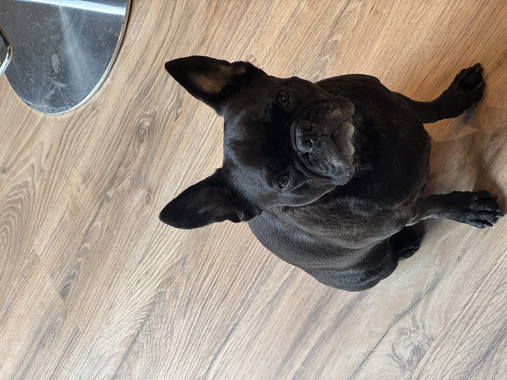

Mathilde

Jeg hedder Mathilde, jeg er 30 år og har de sidste mange år arbejdet som frisør, nu er har jeg taget springet og lavet et brancheskift. Jeg går på uddannelsen It- arkitektur på kea samtidig med, at jeg er selvstændig frisør i en salon i Brønshøj. Min fritid bruger jeg sammen med min kæreste og min hund.
Frisøruddannelsen og min erfaring på arbejdsmarkedet har givet mig en stor forståelse for mennesker. Det giver mig en fordel i gruppearbejde og opgaver hvor der kræves samarbejde. Jeg er kreativt tænkende, og mener at det kan give mig en fordel som IT arkitekt, da jeg tør at tænke ud af boksen, og finde på anderledes løsninger til at løse virksomheders udfordringer. Jeg har derudover en stor interesse inden for matematik og logik, dette kommer til udtryk ved min deltagelse i et supplerende Matematik A kursus på Niels Brock i efteråret 2024, som jeg tog ved siden af min fuldtidsbeskæftigelse. Dette kursus bestod jeg med 7 i gennemsnit.